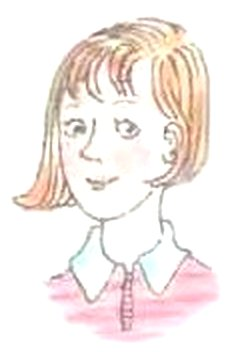
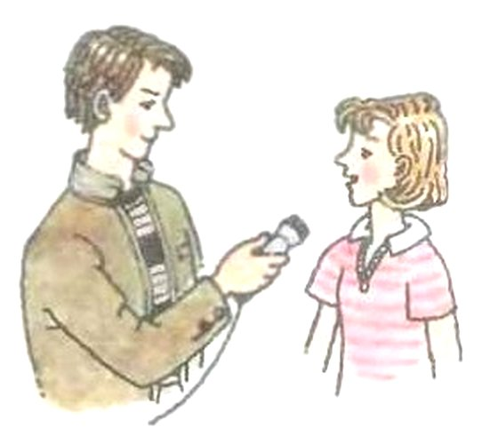

Unit 1 · Step 3
Кто? Где? Как часто?
Арслан, в этом уроке ты научишься задавать вопросы, как настоящий журналист, и рассказывать, как часто ты что-то делаешь.
Представь журналиста школьной газеты. Он идёт брать интервью, а в блокноте у него пять главных вопросов: Кто? Что? Когда? Где? Почему? С ними можно узнать о человеке почти всё.
По-английски эти вопросы — пять коротких слов: who, what, when, where, why. Все они начинаются с букв wh. В учебнике про них есть даже рифмовка.
А ещё журналист может спросить: «Как часто ты играешь в футбол?» Для ответа нужны слова «всегда», «никогда», «часто», «иногда», «обычно». Их ты тоже выучишь.
Что ты узнаешь:
- пять слов-вопросов и как выбрать нужное по ответу;
- почему what перед существительным значит «какой»;
- слова always, never, often, sometimes, usually и куда их ставить в предложении.
На этом телефоне нет английского голоса, поэтому кнопок «послушать» не будет. Слушай записи на уроке или из аудиоприложения к учебнику.
Рядом с английскими словами есть кнопка с динамиком: нажми, и телефон прочитает их по-английски. В текстах из учебника нажми на строчку, и под ней появится перевод.
Надпись вверху шага подскажет, откуда он: синяя — из учебника, золотая — задание учебника, оранжевая — сверх учебника (правила подробнее, словарик, игры). За игры ты соберёшь мозаику на последнем шаге.
Подробнее, как в учебнике · с. 12–15
- Это раздел Unit 1 «Meet John Barker and His Family» — «Познакомься с Джоном Баркером и его семьёй». Урок называется Step 3, он на с. 12–15. На полях каждой страницы написано «Unit 1».
- Урок делится на две части. DO IT TOGETHER — «делаем вместе», это в классе: упражнения 1–7. DO IT ON YOUR OWN — «делай сам», это дома: упражнение 8.
- У упражнений 1, 4 и 5 нарисован значок диска с номером записи: (8), (9) и (10). Эти записи включают на уроке, они есть и в аудиоприложении к учебнику.
- Упражнения 1 и 2 — на с. 12, 3 — на с. 13, 4 — на с. 13–14, 5 и 6 — на с. 14, 7 — на с. 14–15, 8 — на с. 15. После него на с. 15 начинается Step 4, его здесь нет.
Вопросы о Салли
Салли — сестра Джона Баркера. На уроке включат запись (8): это рассказ о ней. Нужно послушать и ответить на пять вопросов.
Самого рассказа в учебнике нет, он только на записи. Поэтому прочитай вопросы заранее: так ты будешь знать, что ловить.

Вопросы о Салли
Нажми на строчку — появится перевод.
1) How old is Sally? Does she go to school?
2) What does she like?
3) Where does she sing?
4) When does she read?
5) Where do John and Sally play in summer?
Что ловить в рассказе
Первое слово вопроса подсказывает, какой нужен ответ:
- How old…?«Сколько лет?» — лови число.
- Does she…?Слова-вопроса нет, ответ «да» или «нет»: Yes, she does. / No, she doesn't.
- What…?«Что?» — лови, что она любит.
- Where…?«Где?» — лови место.
- When…?«Когда?» — лови время: утром, вечером, летом…
Отвечай полным предложением и начинай с She. Посмотри, куда уходит -s: в вопросе Where does she sing?, а в ответе She sings …
В вопросе 1 про возраст отвечают так: She is … и число.
Вопрос 5 про двоих, про Джона и Салли. Ответ начинай с They, и -s у глагола уже не будет.
Подробнее, как в учебнике · с. 12
- Страница начинается с заголовка «Step 3» и надписи «DO IT TOGETHER».
- Упражнение 1: «Послушай текст о сестре Джона Баркера, (8), и ответь на вопросы». Рядом значок диска — запись номер 8.
- 1) How old is Sally? Does she go to school? 2) What does she like? 3) Where does she sing? 4) When does she read? 5) Where do John and Sally play in summer?
- Справа от вопросов нарисована Салли: девочка с рыжеватыми волосами до плеч, в кофточке с белым воротничком.
- Самого текста про Салли в учебнике нет — он только на записи.
Вставь слово-вопрос
В упражнении 2 восемь коротких разговоров. В каждом вопросе потерялось первое слово — слово-вопрос. Его надо выбрать из рамки: where, when, why, what, who.
Секрет: смотри на ответ
Ответ сам подсказывает, о чём спрашивали. Сначала прочитай ответ и спроси себя: что в нём — место, время, причина, человек или предмет?
Вот как это работает на других разговорах, не из учебника:
- — Where does your brother live? — In Moscow.In Moscow — «в Москве», это место → where
- — When do you draw? — In the evening.In the evening — «вечером», это время → when
- — What does Ann like? — Cats.Cats — «кошек», это не человек → what
- — Who do you see? — My cousin.My cousin — «двоюродного брата», это человек → who
- — Why do you like winter? — I can ski and skate.«Я умею кататься на лыжах и коньках» — это причина → why
Если вопросительное слово what стоит перед существительным, то оно означает какой, какая, какие.
- What books …?Какие книги …?
- What films …?Какие фильмы …?
Существительное — это слово-предмет: books (книги), films (фильмы), games (игры). Если what стоит прямо перед таким словом, переводи не «что», а «какие».
Слов в рамке пять, а пропусков восемь: некоторые слова понадобятся дважды.
Посмотри на слово сразу после пропуска. Если там do или does — выбирай по ответу. Если там существительное — прочитай правило в рамке.
Ответ, который объясняет «потому что», — это ответ на «почему?», даже если слова «потому что» в нём нет.
Подробнее, как в учебнике · с. 12
- Упражнение 2: «Заполни пропуски вопросительными словами, чтобы получились законченные предложения». В рамке слова: where, when, why, what, who.
- 1) — … do the children read in English? — Texts.
- 2) — … do they go in the morning? — To school.
- 3) — … does Rex play in the park? — In the afternoon.
- 4) — … do the boys ride bikes? — In the street.
- 5) — … does Johnny go to the shops? — He helps his mother.
- 6) — … does Sally meet at school? — Her friends.
- 7) — … does he speak English? — He loves it and knows English very well.
- 8) — … colours do you like? — I like blue and purple.
- Правило в жёлтой рамке внизу страницы: «Если вопросительное слово what стоит перед существительным, то оно означает какой, какая, какие. What books …? — Какие книги …? What films …? — Какие фильмы …?»
Пять слов-вопросов
Слово-вопрос выбирают по тому, что хотят узнать: человека, предмет, время, место или причину. В вопросе оно всегда стоит первым.
Слово-вопрос похоже на дорожный указатель: оно сразу показывает, какой ответ ты ждёшь. Спросил where — жди место. Спросил when — жди время.
- whoкто? кого? Ответ — человек.Who do you see in the park? — My brother.Кого ты видишь в парке? — Своего брата.
- whatчто? Ответ — предмет или занятие.What does Kate draw? — Flowers.Что рисует Кейт? — Цветы.
- what + существительноекакой? какая? какие?What games do you play? — Chess and football.В какие игры ты играешь? — В шахматы и футбол.
- whenкогда? Ответ — время.When does Tom read? — In the evening.Когда Том читает? — Вечером.
- whereгде? куда? Ответ — место.Where do you swim in summer? — In the Caspian Sea.Где ты плаваешь летом? — В Каспийском море.
- whyпочему? Ответ — причина.Why do you like summer? — I can swim in the sea.Почему ты любишь лето? — Я могу плавать в море.
Каспийск стоит на берегу Каспийского моря. Поэтому на вопрос Where do you swim in summer? у нас многие ответят: In the Caspian Sea.
А в каком порядке строить сам вопрос — на следующем шаге.
Паровозик вопроса
Вопрос строится так: слово-вопрос, потом do или does, потом кто, потом что делает, потом всё остальное.
Ты уже знаешь этот паровозик из Step 2 (с. 9). Слово-вопрос — паровоз, он всегда впереди, а за ним цепляются вагоны.
Когда Кейт играет в теннис?
What и существительное едут вместе, в одном паровозе. Их не разрывают:
Какие игры ты любишь?
А почему?
Почему who — то «кто», то «кого»? В вопросе Who do you see? видит тот, кто стоит после do, — you. А who — тот, кого видят. Поэтому здесь who значит «кого». Об этом была сноска в Step 2 (с. 9).
Почему where — и «где», и «куда»? В английском на оба вопроса одно слово: Where do you live? — Где ты живёшь? Where do you go on Sunday? — Куда ты ходишь в воскресенье?
Почему do забыть нельзя? Без do получается не вопрос, а обрывок. В русском мы спрашиваем голосом, а в английском вопрос строят вагончиками, и do — обязательный вагон.
Почему после does нет -s? Окончание уже «уехало» в does. Два раза его не пишут: does Tom play.
Проверь себя: 4 вопроса
Интервью для школьной газеты
К Салли пришёл корреспондент школьной газеты — тот самый журналист. Он задал ей пять вопросов. Прочитай, как она ответила.

Sally Barker
Нажми на строчку — появится перевод.
1) — What animals do you like?
— I like sheep.
2) — What wild animals do you like?
— I like lions.
3) — What books do you read?
— I read good books.
4) — What films do you watch?
— I watch old and new films.
5) — What games do you like to play?
— I play football, but I'm not a good footballer.
Заметил? Все пять вопросов начинаются с what, и сразу за ним стоит существительное: animals, books, films, games. Значит, везде what — «какие», как в правиле на с. 12.
В вопросе 2 между what и animals встало ещё слово wild — «дикие». Всё равно это «каких животных».
sheep — овца. Одна овца — a sheep, много овец — тоже sheep, без -s. Поэтому Салли и говорит I like sheep.
Подробнее, как в учебнике · с. 13
- Упражнение 3: «Прочитай, как отвечает на вопросы корреспондента школьной газеты Салли Баркер. А как бы ответил на эти вопросы ты?» Вторая часть задания — на следующем шаге.
- Слева рисунок: юноша-корреспондент с микрофоном берёт интервью у Салли, подпись «Sally Barker».
- 1) — What animals do you like? — I like sheep.
- 2) — What wild animals do you like? — I like lions.
- 3) — What books do you read? — I read good books.
- 4) — What films do you watch? — I watch old and new films.
- 5) — What games do you like to play? — I play football, but I'm not a good footballer.
А как бы ответил ты?
Вторая часть упражнения 3 — ответить на те же пять вопросов корреспондента про себя. В учебнике для этого нарисован силуэт с подписью You — «ты», а рядом с каждым вопросом пустая линейка.
Строй ответ по образцу Салли: I + глагол из вопроса + твой ответ. Глагол бери прямо из вопроса: спросили do you read — отвечай I read.
Вот так это выглядит на других вопросах, не из учебника:
- — What songs do you sing? — I sing funny songs.— Какие песни ты поёшь? — Я пою смешные песни.
- — What sweets do you like? — I like chocolate.— Какие сладости ты любишь? — Я люблю шоколад.
Отвечай честно, про себя: правильных ответов тут много.
В вопросе 5 спрашивают про игры, в которые ты любишь играть. Салли ответила про футбол и добавила, что играет не очень хорошо. Ты можешь ответить коротко: I play …
Если не знаешь, как сказать какое-то слово по-английски, спроси учителя или родителей.
Подробнее, как в учебнике · с. 13
- Вторая часть задания 3: «А как бы ответил на эти вопросы ты?»
- Справа на с. 13 — контур головы и плеч человека без лица, подпись «You». Под ним пустые линейки для твоих ответов, по одной напротив каждого из пяти вопросов.
- Вопросы те же, что задавали Салли: What animals do you like? What wild animals do you like? What books do you read? What films do you watch? What games do you like to play?
Рифмовка «Who? What? When? Where? Why?»
Задание: разучить рифмовку, послушать и повторить её за диктором. Запись (9) включат на уроке, она есть и в аудиоприложении. Наши кнопки помогут потренироваться дома, но запись с диктором они не заменяют.
Секрет рифмовки: одни и те же вопросы задают сначала тебе — с you и do. А потом про него или про неё — с he, she и does. В учебнике эти строчки сдвинуты вправо, здесь тоже.
Who? What? When? Where? Why?
Нажми на строчку — появится перевод. Вся рифмовка целиком:
Who? What? When? Where? Why?
Who? What? When? Where? Why?
Who do you see?
What do you like?
Where do you go on Sunday?
Who does he see?
What does he like?
Where does he go on Sunday?
When do you play?
When do you swim?
Why do you run in the morning?
When does she play?
When does she swim?
Why does she run in the morning?
What books do they read?
What films do they watch?
Why do they read and speak English?
Учи по три строчки. Строчки про he и she — это те же вопросы, только do меняется на does. Выучил строчку про you — считай, выучил и строчку про he.
Подробнее, как в учебнике · с. 13–14
- Упражнение 4: «Разучи рифмовку; послушай и повтори её за диктором, (9)». Рядом значок диска — запись номер 9.
- Заголовок рифмовки жирным: «Who? What? When? Where? Why?»
- С. 13: Who? What? When? Where? Why? / Who? What? When? Where? Why? / Who do you see? / What do you like? / Where do you go on Sunday? — и со сдвигом вправо: Who does he see? / What does he like? / Where does he go on Sunday?
- С. 14: When do you play? / When do you swim? / Why do you run in the morning? — со сдвигом вправо: When does she play? / When does she swim? / Why does she run in the morning? — и дальше: What books do they read? / What films do they watch? / Why do they read and speak English?
Новые слова: как часто?
В упражнении 5 пять новых слов. Все они отвечают на вопрос «как часто?». На уроке их слушают и повторяют за диктором — запись (10).
A. Слова
- always[ˈɔːlweɪz]всегда
- never[ˈnevə]никогда
- often[ˈɒfn]часто
- sometimes[ˈsʌmtaɪmz]иногда
- usually[ˈjuːʒʊəli]обычно
В квадратных скобках — транскрипция, как в учебнике. Это запись того, как слово звучит. Послушай каждое слово кнопкой-динамиком и сравни с транскрипцией.
Обрати внимание: в слове often буква t не читается, в транскрипции её нет.
Подробнее, как в учебнике · с. 14
- Упражнение 5: «Познакомься с новыми словами. Послушай и повтори новые слова и предложения с ними за диктором, (10)». Рядом значок диска — запись номер 10.
- A. always [ˈɔːlweɪz] — всегда; never [ˈnevə] — никогда; often [ˈɒfn] — часто; sometimes [ˈsʌmtaɪmz] — иногда; usually [ˈjuːʒʊəli] — обычно.
- Часть B — предложения с этими словами — на следующем шаге.
Предложения с новыми словами
Часть B упражнения 5: к каждому новому слову по три предложения. На уроке их повторяют за диктором — это тоже запись (10). Посмотри, где в предложении стоит новое слово: чаще всего прямо перед действием.
B. Предложения с новыми словами
Нажми на строчку — появится перевод.
always
We always go to the shops on Saturdays.
Mike always drives to town in his car.
They always go to school in the morning.
never
You never play tennis.
Why do you never ride your bike?
Mary never plays with her dolls, she plays with her teddy bear.
often
Do you often go to the cinema?
I don't often play volleyball.
Does Lizzy often sing?
sometimes
Fred sometimes drives to the park.
Sally sometimes speaks French.
Sometimes John watches television with his parents.
usually
Do you usually go to school at the weekend?
Sally doesn't usually sing in the morning.
I usually help my mother about the house.
Подробнее, как в учебнике · с. 14
- Упражнение 5, часть B — предложения с новыми словами, их тоже повторяют за диктором (запись 10). Перед каждой группой жирным написано слово.
- always: We always go to the shops on Saturdays. Mike always drives to town in his car. They always go to school in the morning.
- never: You never play tennis. Why do you never ride your bike? Mary never plays with her dolls, she plays with her teddy bear.
- often: Do you often go to the cinema? I don't often play volleyball. Does Lizzy often sing?
- sometimes: Fred sometimes drives to the park. Sally sometimes speaks French. Sometimes John watches television with his parents.
- usually: Do you usually go to school at the weekend? Sally doesn't usually sing in the morning. I usually help my mother about the house.
Как часто?
Слова always, never, often, sometimes, usually отвечают на вопрос «как часто?»: как часто человек что-то делает.
Представь, что ты отмечаешь в календаре дни, когда что-то делал. По такому календарю сразу видно, «как часто». Разберём каждое слово по очереди, в том же порядке, что в учебнике.
- alwaysвсегда — каждый раз, без пропусков.
Отмечен каждый день недели.
My granny always drinks tea in the morning.Моя бабушка всегда пьёт чай утром. - neverникогда — ни разу.
Ни одного отмеченного дня.
My cat never swims.Моя кошка никогда не плавает. - oftenчасто — много раз.
Если ты любишь футбол, ты часто в него играешь.
We often play football after school.Мы часто играем в футбол после школы. - sometimesиногда — время от времени: бывает, а бывает и нет.
Иногда к вам приходят гости, а иногда вечер проходит тихо.
Ben sometimes plays computer games.Бен иногда играет в компьютерные игры. - usuallyобычно — так заведено, так бывает, если не случилось ничего особенного.
Обычно ты ходишь в школу одной и той же дорогой.
Kate usually reads in the evening.Кейт обычно читает вечером.
Слово never уже значит «никогда не». В русском мы говорим два «не»-слова: «никогда не плавает». А в английском хватает одного: My cat never swims.
А куда эти слова ставить в предложении — на следующем шаге.
Куда поставить «как часто»
Слово «как часто» ставят прямо перед глаголом-действием. После he, she или имени глагол всё равно получает -s.
Слово «как часто» — как репейник: оно цепляется к действию и встаёт прямо перед ним. Смотри, как это выглядит в трёх разных предложениях.
В обычном предложении
Том всегда играет в футбол.
Tom — он один, поэтому plays с -s, как и без always.
В вопросе
Ты часто плаваешь в реке?
Сначала do или does, потом кто, потом «как часто», потом действие. Со словом-вопросом так же: Where do you usually play? — Где ты обычно играешь?
С don't и doesn't
Энн обычно не смотрит телевизор.
Слово встаёт между doesn't и действием. После doesn't глагол без -s.
А sometimes может встать и в самое начало: Sometimes John watches television… — так в учебнике на с. 14.
Примеры и частые ошибки — на следующем шаге.
Примеры и ошибки
Посмотри, где стоит слово «как часто» в каждом примере. Оно выделено цветом. Нажми на динамик и повтори вслух.
- My sister always helps our granny.Моя сестра всегда помогает бабушке.
- I never drink coffee.Я никогда не пью кофе.
- Do your friends often play chess?Твои друзья часто играют в шахматы?
- We sometimes skate in winter.Мы иногда катаемся на коньках зимой.
- Max doesn't usually read in the evening.Макс обычно не читает вечером.
- Nick never watches TV in the morning.Ник никогда не смотрит телевизор утром.
- Where do you usually play? — In the park.Где ты обычно играешь? — В парке.
А почему?
Почему нельзя «don't never»? В английском в предложении бывает только одно слово-«нет». never уже значит «никогда не», и второе «нет» (don't) всё портит.
Почему после always есть -s, а после doesn't usually нет? Слово «как часто» ничего не меняет. Окончание -s уходит туда, где есть does или doesn't. Если их нет, -s остаётся у глагола: Tom always plays, но Tom doesn't usually play.
Проверь себя: 5 вопросов
Шкала и «а ты как часто?»
Упражнение 6: шкала
Нужно подумать, в каком порядке расставить новые слова на шкале. Концы уже подписаны: слева never, справа always. Три места посередине — твои.
Сначала переведи каждое слово на русский: перевод есть в упражнении 5 (шаг 9).
Потом сравнивай по два. Что бывает чаще — «часто» или «иногда»? Кто чаще, тот ближе к always.
Упражнение 7: а ты?
Здесь нужно рассказать о себе: что из списка ты делаешь всегда, часто, обычно, иногда, а чего никогда не делаешь. В списке десять действий.
Строй предложение так: I + слово «как часто» + действие из списка.
Пример с действием, которого в списке нет: I often draw pictures. — Я часто рисую картинки.
Если ты этого никогда не делаешь, скажи просто never, без don't: I never …
Отвечай честно, про себя: правильных ответов много. Главное, чтобы слово стояло прямо перед действием.
Подробнее, как в учебнике · с. 14–15
- Упражнение 6: «Подумай, в каком порядке можно было бы расположить новые слова на этой шкале». Нарисована линия, под ней: never — ? — ? — ? — always.
- Упражнение 7: «Скажи, что из перечисленного ниже ты делаешь всегда, часто, обычно, иногда или чего никогда не делаешь». В рамке слова: always, often, usually, sometimes, never.
- 1) I … play tennis. 2) I … watch television. 3) I … go to school on Sundays. 4) I … read books. 5) I … eat ice cream.
- 6) I … help my parents. 7) I … ride a bike. 8) I … drive a car. 9) I … go to the bank. 10) I … ski in spring.
Словарик: слова-вопросы
ИграНажми на карточку: она перевернётся, и телефон скажет слово. Словарик из двух частей, открой все карточки.
Словарик: как часто?
ИграВторая часть: новые слова из упражнения 5 и полезные выражения из предложений к ним.
Угадай слово-вопрос
ИграВ каждом вопросе потерялось первое слово. Прочитай ответ после тире и выбери, какое слово-вопрос было.
Вопрос и ответ
ИграНажми на вопрос слева, потом на подходящий ответ справа. Смотри на первое слово вопроса.
Поставь слово на место
ИграСобери английское предложение: нажимай на слова по порядку. Главное — поставить слово «как часто» на правильное место. Нажмёшь на слово в строке — оно вернётся вниз.
Послушай и найди
ИграНажми «Послушать»: телефон скажет фразу. Выбери, какую именно. Фразы отличаются одним словом, так что слушай внимательно.
Проверь себя
Все задания Step 3
Здесь все упражнения урока по порядку, как в учебнике. У каждого — подсказка и ссылка на шаг, где это разобрано. Ответов тут нет: их ты найдёшь сам.
DO IT TOGETHER — делаем вместе
С. 12. Послушай текст о сестре Джона Баркера (запись 8) и ответь на вопросы.
Подсказка: прочитай пять вопросов заранее. Первое слово вопроса говорит, что ловить: число, место, время. Отвечай полным предложением: She …
Шаг 2 · Вопросы о СаллиС. 12. Заполни пропуски вопросительными словами: where, when, why, what, who.
Подсказка: сначала читай ответ. Место, время, причина, человек или предмет? Если после пропуска стоит существительное — вспомни правило про what.
Шаг 3 · Вставь слово-вопрос Шаг 4 · Пять слов-вопросовС. 13. Прочитай, как Салли Баркер отвечает корреспонденту школьной газеты. А как бы ответил ты?
Подсказка: ответ строй по образцу Салли — I + глагол из вопроса + твой ответ.
Шаг 6 · Интервью Салли Шаг 7 · А как бы ответил ты?С. 13–14. Разучи рифмовку, послушай и повтори её за диктором (запись 9).
Подсказка: учи по три строчки. Строчки про he и she — те же вопросы, только с does.
Шаг 8 · РифмовкаС. 14. Познакомься с новыми словами, послушай и повтори слова и предложения за диктором (запись 10).
Подсказка: сначала послушай слово, потом посмотри на транскрипцию. В often буква t не читается.
Шаг 9 · Новые слова Шаг 10 · ПредложенияС. 14. Подумай, в каком порядке расположить новые слова на шкале от never до always.
Подсказка: переведи слова и сравнивай по два — что бывает чаще?
Шаг 14 · Шкала Шаг 11 · Как часто?С. 14–15. Скажи, что из списка ты делаешь всегда, часто, обычно, иногда, а чего никогда не делаешь.
Подсказка: I + слово «как часто» + действие. С never не нужно don't.
Шаг 14 · Упражнение 7 Шаг 12 · Куда ставить словоDO IT ON YOUR OWN — делай сам
С. 15. Выполни задания 1–5 в рабочей тетради.
Подсказка: рабочей тетради у нас здесь нет, но задания в ней на то же, что в этом уроке. Если что-то непонятно, вернись к шагам с правилами.
Шаг 4 · Слова-вопросы Шаг 12 · Куда ставить словоПодробнее, как в учебнике · с. 12–15
- В части DO IT TOGETHER семь упражнений: 1 и 2 — на с. 12, 3 — на с. 13, 4 — на с. 13–14, 5 и 6 — на с. 14, 7 — на с. 14–15.
- Часть DO IT ON YOUR OWN — одно упражнение 8 на с. 15: «Выполни задания 1—5 в рабочей тетради».
- Записи к упражнениям 1, 4 и 5 — номера 8, 9 и 10.
Главное из Step 3
Вот четыре «кирпичика» — правила этого урока. Сначала вспомни каждое сам, потом открой и проверь.
Слово-вопрос выбирают по ответу и ставят первым, а слово «как часто» ставят прямо перед действием.